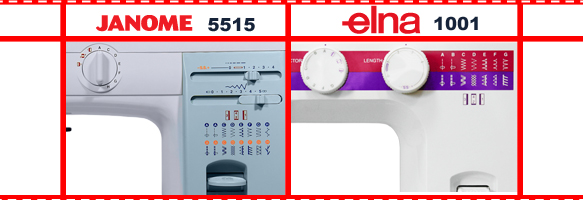

|
Приветствую всех, кто проявил интерес к нашему новому тест-драйву. Сегодня будут сравниваться две машины бюджетного сегмента. Представим нашего постоянного участника фирму janome и поприветствуем новичка наших обзоров elna. Стоит коснуться историй фирм, а они тесно переплетены с недавнего времени. Швейцарский бренд ведет отсчет своей деятельности с 1940 года. Именно в этом году Elna вышла на рынок благодаря выпуску первой компактной швейной машины со съемной рукавной платформой. Эта «зеленая» машина произвела фурор на рынке. Инновации и технические разработки, так и остались девизом швейцарской компании. Недавно фирмы стали тесно связаны, Elna стала выпускать свою швейную продукцию на лучших заводах Janome, расположенных в Японии и на Тайване. Это позволило швейцарцам сделать свою продукцию более доступной и завоевать свой кусок рынка в более чем 50 странах на 6 континентах. Возможна в нашей стране компания Elna не так известна, как Janome, но многое в прогрессе швейной бытовой техники связанно именно с швейцарцами. Европейцы из страны «сыра и часов» изобрели первыми портативную машину со свободным рукавом(1940г), со сменой швейных операций и обратным ходом(1952г), электронную машину(1964г). Машины с имитацией оверлочной(1963г), двойной оверлочной строчки(1976), все это инновации компании Elna. Швейцарский бренд в 1972 становится официальной швейной машиной Олимпийских игр в Мюнхине, а четырьмя годами ранее выпускает Lotus(первая компактная швейная машина с отделением для аксессуаров), которая представлена в Нью-Йоркском музее современного искусства. Качество, инновации и доступность - вот слова, кратко характеризующие Elna. Фирма Janome появилась в 1921 году в Японии. На данный момент один из известнейших брендов, на заводах которого выпускается множество европейских производителей швейного оборудования, включая части линейки или полного производства брендов Pfaff, Elna, Husquarna. Так же Janome принадлежит старейший американский бренд New Home, который старше Японцев более чем на 50 лет. На протяжении многих лет компания развивалась, что позволило Janome открыть несколько фабрик и торговых представительств в разных странах, на разных материках… Первые фабрики были полностью запущены для массового производства в 1936 году в городах Токио и Когани, в процессе дальнейшего расширения в других странах они слились в один завод в столице Японии, являющийся флагманским и производящим только топ-модели. В процессе взросления и появления больших амбиций была открыта торговая организация в Америке на базе New Home inc. Далее для завоевания лидирующих позиций во всем регионе, открылось представительство в Канаде, с офисами в Торонто, Ванкувере и Монреале. А в 1969 году появился первый офис janome на Зеленом континенте, сейчас офисы находятся в городах Сидней, Брисбен, Аделаида и Персе. Следующими витками развития гиганта являлись открытия двух новых заводов на Тайване(1969г) и в Таиланде(1988), фабрика "Taiwan Janome Sewing Machine Co., Ltd." Является самой крупной в мире. Ну а уже в 90-х годах прошлого столетия к Janome примкнула английское торговое представительство "New Home Sewing Machine Co Ltd.", сменившее название на "Janome UK Ltd.". Ну и последним на сегодняшний день было открыто представительство в Хоофддорпе (2002г), что близ Амстердама(Голландия), с целью распространить влияние на Голландию, Бельгию и Германию. |
|  |
|
Elna 1001 выполняет 15 швейных операций, которые полностью совпадают с умениями Janome 5515. Это прямая, зигзаг, эластичные, обметочные, усиленные строчки, а также петля-полуавтомат. Janome обладает нитевдевателем, что делает ее выгодней в эргономическом плане, вал блокируется автоматически, без лишних движений, при намотке шпульной нити. Однако, у 5515 отсутствует задняя крышка, металлическая часть является обработанной станиной, без распостраненной сегодня пластиковой крышки-корпуса, что не удивительно, учитывая возраст разработки машины(она приемник и точная копия Janome 415). А в остальном Elna выигрывает за счет своего дискообразного переключения длины стежка, а это гораздо удобнее ползунков, например в случае регулировки плотности петли и т. д.. |
|
Тут предварительно отдам первенство Janome, так как 5515 предназначена для тяжелых и сверх тяжелых материалов. Но это мои догадки, приступим к тесту.
Возьмем 6 слоев джинсы средней плотности. Поставим длину стежка 4 мм, подъем лапки у обеих машин одинаков.
Усложним задачу, испытаем на средней коже в два слоя. |
|
Elna чуть подсбаривает материал, мы на треть значения уменьшаем натяжение верхней нити и получаем вполне удовлетворительную и прямую строчку. А вот Janome сбарило сильно, натяжением верхней нити добиться приемлимого результата не удалось. Надо пытаться настраивать натяжением нижней нити, чего не очень рекомендуется в бытовых условиях. В этом испытании выявился победитель. Вот и 1001 показала свой характер. |
|
При одинаковых настройках попытаемся выметать наиболее густую петлю. Этот конкурс был более субъективным, не исключаю возможности больше развитой моторики рук у другого пользователя. Но все же так или иначе 1001 удобнее 5515. |
Вывод: несомненно фирма janome более знакома нашим соотечественникам, да и ее история на нашем рынке внушает доверие. Но все, же вам стоит задуматься над выбором, что именно Вы хотите получить. Elna более универсальна и с более удобным управлением, а Janome проще в заправке нити и идеальна на толстых материалах. Остается сделать выбор. Для дома более удобна 1001, в быту встречаются разные по толщине материалы. А вот для более грубых материалов, с крайне редким пошивом тонких тканей Вам подойдет 5515. Надеюсь, мы вам помогли, удачного выбора…
В данной статье мы провели сравнение швейных машинок Elna 1001 и Janome 5515. Получить информацию о сравнении других швейных машин вы можете на странице «обзоры». Сайт регулярно обновляется и дополняется новыми обзорами, не пропустите!